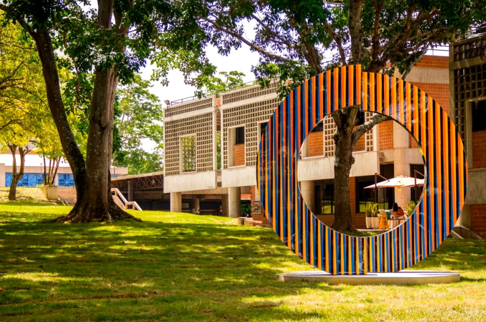
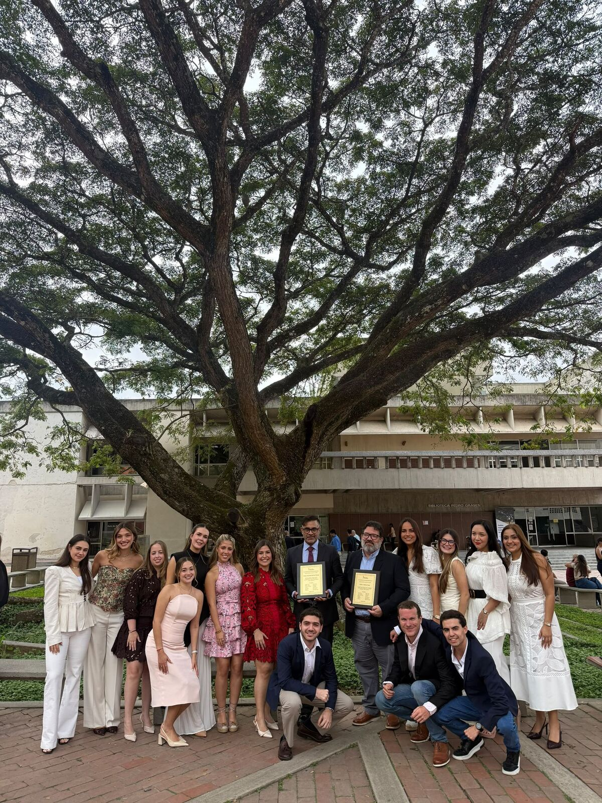
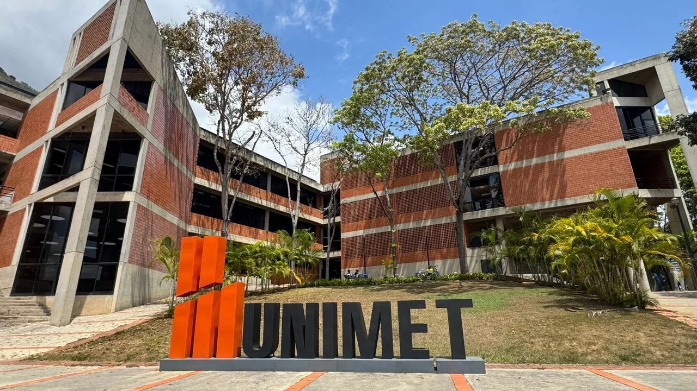

Art. 1
Razonamiento y análisis jurídico
Leer una norma, desarmar un caso y construir un argumento que resista la réplica. La lógica antes que la memoria.
Se forma en

Escuela de
La formación de un abogado con las capacidades que requiere un profesional moderno, preparado para un mundo globalizado e interrelacionado.
Desliza para entrar
Facultad de Estudios Jurídicos y Políticos
Abogados para un mundo interrelacionado.
Preámbulo
Objetivo de la carrera
Formar un abogado emprendedor con alta competencia técnica y ética, cuyo enfoque es prevenir conflictos y ser un agente de cambio, capaz de liderar en el sector económico y contribuir a la restauración del Estado de Derecho.1
1 Objetivo de la carrera de Derecho, Universidad Metropolitana.
Título I
La carrera
La Escuela de Derecho de la Universidad Metropolitana forma juristas capaces de negociar, razonar jurídicamente, argumentar e investigar. Un currículo flexible, grupos reducidos y una mirada internacional que entiende el Derecho como herramienta para emprender, construir instituciones y servir.
Título II
Cuatro artículos que ordenan lo que un abogado unimetano sabe hacer al egresar, y las asignaturas donde se construye cada uno.
01 / 04Sigue bajando
Art. 1
Leer una norma, desarmar un caso y construir un argumento que resista la réplica. La lógica antes que la memoria.
Se forma en
Art. 2
El abogado como estratega: entiende el negocio, diseña estructuras y gestiona su propia práctica profesional.
Se forma en
Art. 3
Pensar el Derecho más allá de la frontera: tratados, conflictos de leyes, sistemas comparados y un segundo idioma de trabajo.
Se forma en
Art. 4
El Derecho como compromiso con las personas, la democracia y el Estado de Derecho. La ética no es una materia: es el método.
Se forma en
Perfil de egreso
i.
ii.
iii.
Título IV
Plan de estudios
Doce trimestres, cinco asignaturas por trimestre. Elige un área para ver cómo recorre la carrera, o toca una asignatura para ubicarla.
Desliza para ver los 12 trimestres
Además del plan, para egresar
Examen Comprehensivo
La simulación de un juicio: defiendes, de forma oral y escrita, un caso hipotético ante un jurado de profesores, en una audiencia abierta al público en la Sala de Juicios. Pone a prueba tus competencias jurídicas, tu oratoria y tu argumentación, y es el puente entre la carrera y el ejercicio profesional.

Título V
Perfil del estudiante
Al egresar, podrás
Título VIII
Planes combinados
El Plan de Estudios Simultáneos une Derecho, Estudios Liberales y Estudios Internacionales en un mismo plan. Las estudias en paralelo y al terminar obtienes las tres licenciaturas.
Aprobado en julio de 2025
Asignaturas comunes
Algunas asignaturas están en el plan de las tres carreras, como Introducción a la Política, Derecho Constitucional y Derechos Humanos. Las apruebas una vez y te cuentan para las tres. Otras se comparten entre dos de ellas.
Equivalencias
Algunas asignaturas se reconocen entre carreras: cursas una y te vale por la otra. Por ejemplo, Principios de Economía en lugar de Introducción al Análisis Económico del Derecho, o Teoría Social I en lugar de Sociología Jurídica.
Para egresar
Tu Trabajo de Grado vale para las tres carreras. Además cumples el Servicio Comunitario, Inglés IV y V, una pasantía de Derecho y otra de Estudios Liberales o Internacionales, cuatro seminarios y el Examen Comprehensivo de Derecho.
Título IX

El plan de estudios se organiza en doce trimestres, con cinco asignaturas por trimestre. Además se cumplen el Servicio Comunitario, la Pasantía Académica, la Defensa del Trabajo de Grado y el Examen Comprehensivo.
Sí. Existen planes combinados de Derecho y Estudios Internacionales, Derecho y Estudios Liberales, y un plan que integra las tres carreras.
Son cinco asignaturas que eliges tú: una en el IV trimestre, una en el XI y tres en el XII. Te permiten profundizar en el área que más te interesa.
La Escuela mantiene un convenio de intercambio con el Instituto de Estudios Políticos de Francia (Sciences Po).
El Taller de Trabajo de Grado se cursa en el X trimestre y acompaña la elaboración de tu investigación final.
En tu propia firma, en las grandes firmas del país, como consultor del sector público o privado, o en organismos internacionales. La formación en negocios, tecnología y energía abre además áreas emergentes del ejercicio.
A la Dirección de la Escuela de Derecho. Encontrarás el contacto al final de esta página.